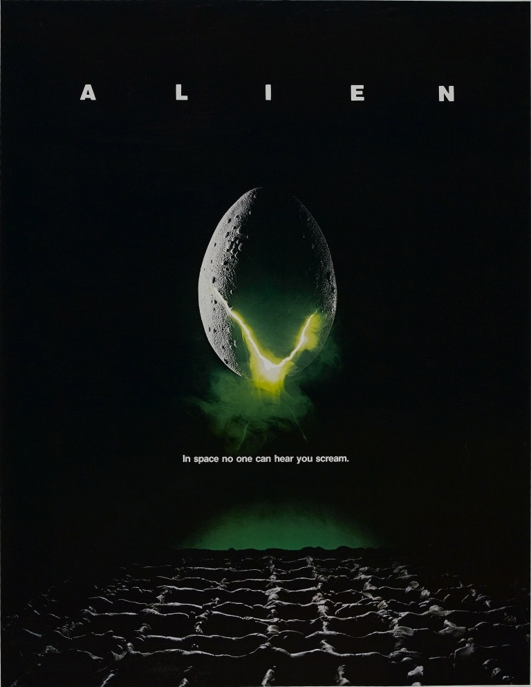
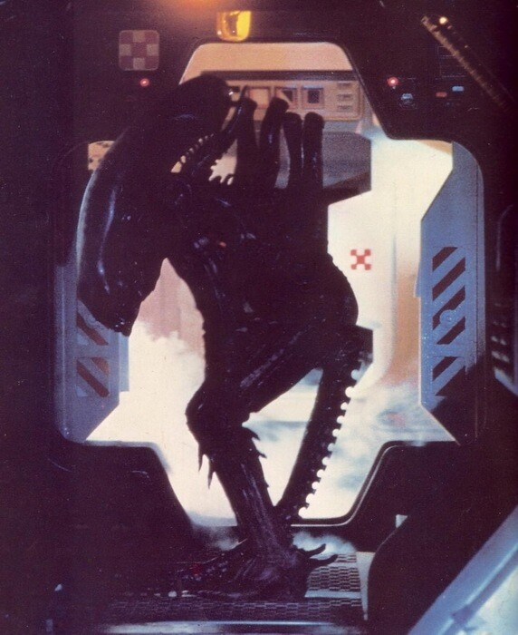
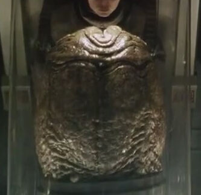
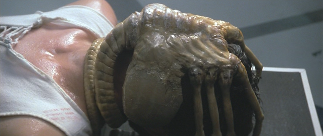

«В космосе никто не услышит твоего крика» - слоган |
«Чужой» (англ. Alien) — научно-фантастический фильм ужасов режиссёра Ридли Скотта. Название отсылает к главному антагонисту фильма — Чужому.
«Чужие» или ксеномо́рфы (лат. Xenomorph, также Xenomorph XX121 от греч. ξένος «чужой» + μορφή «форма») — название вымышленной внеземной расы из вселенной фильмов «Чужой» и «Чужой против Хищника». Кроме того, Чужие фигурируют в различных литературных произведениях и видеоиграх.
В отличие от некоторых других внеземных рас, представленных в научной фантастике, Чужие не являются представителями высокоразвитой технологической цивилизации. Отличаются ярко выраженным агрессивным поведением и почти всегда стремятся убить любое живое существо, попавшее в поле зрения. Подобно общественным насекомым, Чужие являются эусоциальным видом с одной производящей потомство самкой. Жизненный цикл включает имплантацию эндопаразитоидных личинок внутрь ещё живых организмов хозяев. Закончив своё развитие, личинки вырываются из тел, служащих инкубатором, затем быстро созревают до взрослого возраста в течение нескольких часов и начинают поиски новых хозяев для размножения. Сюжет фильма «Прометей» в некоторой степени раскрывает происхождение Чужих как вида − он был разработан и искусственно выведен Космическими жокеями в качестве биологического оружия, которое впоследствии вышло из-под контроля. |
 |
Источник : Википедия |
Строение Чужого |
Анатомия |
|  |
Чужой — двуногая прямоходящая особь, способная быстро перемещаться на четырёх конечностях, а также прыгать и плавать, его организм состоит как из органических, так и неорганических соединений и представляет собой синтез кремниево-металлической и углеродной структуры. Экзоскелет состоит из поляризованных органических силикатов, силикатные клетки имеют металл в связанном состоянии. Кроме внешнего экзоскелета, присутствует внутренняя костная структура.
Дизайн «Чужого» принадлежит швейцарскому сюрреалисту и художнику Х. Р. Гигеру; первый его концепт был представлен ещё в 1976 году в одном из альбомов иллюстраций автора, позже он был доработан для первого фильма серии «Чужой». Особенности строения головы и челюсти были разработаны и созданы итальянским дизайнером спецэффектов Карло Рамбальди. |
Физиология |
Кровь чужих отличается сильными кислотными свойствами и способна разъедать почти любое вещество при контакте с ним. Её цвет тусклый, желтовато-зелёный. Художник Рон Кобб, занимающийся концептами, при создании образа Чужого для первого фильма франшизы предложил идею пришельца с кислотной кровью с целью создания правдоподобного средства сделать существо «неуязвимым». Если бы кто-то использовал традиционное огнестрельное оружие или взрывчатые вещества, чтобы убить, его кровь разъела бы корпус космического корабля. В одноименной новеллизации фильма «Чужой» говорится, что, по крайней мере, на стадии «лицехвата» кислотой является не кровь, а полостная жидкость, находящаяся под давлением между двойным слоем кожных покровов. |
Источник : Википедия |
Жизненный цикл |
Яйцо |
Яйцо, Яйцеморф (англ. Egg, Ovomorph) — самая первая стадия развития Чужого. Именно в нем находится лицехват.
Королева откладывает мягкие кожистые яйца, внутри которых развивается паразит, называемый обычно
«лицехват», которого можно сравнить с личинкой насекомого. Отложенное яйцо может длительное время пребывать в состоянии диапаузы при неблагоприятных условиях. Яйцо раскрывается, выпуская лицехвата, когда улавливает жизнеспособную жертву.
Яйца появляются из яйцеклада Королевы. Обычно они располагаются группами по нескольку десятков или сотен штук.Яйца могут находиться и жить даже при неблагоприятных условиях. Если к ним подойдёт какое-либо живое существо, они начнут раскрываться, и из них вылезет готовый Лицехват. |
 |
Лицехват |
|  |
Лицехват (англ. Facehugger) — ранняя стадия развития Чужого, маленькое паукообразное существо. Вылупляется из Яйца для заражения жертвы Грудоломом.
Лицехват, как уже говорилось, походит на паука, бежево-красного цвета. У него восемь подвижных конечностей, а также мускулистый хвост. В самом лицехвате есть отверстие, через которое вводится эмбрион.
Как и обычные Чужие, лицехват имеет вместо крови кислоту.
Когда поблизости никого нет, лицехват мирно спит в яйце. Однако если к яйцу подошло какое-либо живое существо, лицехват просыпается.
Яйцо раскрывается, и "паук" вылезает из него. Потом он бежит к потенциальной жертве и с помощью отталкивания хвостом цепляется ей за лицо.
|
Отодрать лицехвата практически невозможно: если вы попытаетесь это сделать, монстр лишь крепче скрутит хвост у горла жертвы и начнёт душить ее. Но как показано в "Завете", отодрать лицехвата вполне возможно, но не факт что носитель выживет.
После внедрения эмбриона жертве в рот лицехват отделяется от неё и погибает. Жертва после этого вновь работает нормально, но у неё амнезия.
|
Продолжение следует... |
Источник : AvP World Wiki |